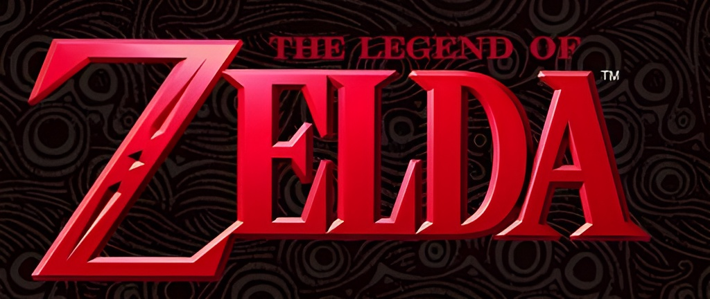

Zelda: la trayectoria del heroe
"The Legend of Zelda" es una icónica serie de videojuegos desarrollada por Nintendo que ha cautivado a millones de jugadores desde su debut en 1986. Concebida por el legendario diseñador de videojuegos Shigeru Miyamoto, esta saga combina elementos de acción, aventura, exploración y rompecabezas en un vasto mundo de fantasía.
La serie sigue las épicas aventuras del valiente héroe Link, quien se embarca en misiones para rescatar a la princesa Zelda y derrotar al malvado hechicero Ganon. Con su enfoque en la exploración libre y la resolución de acertijos, "The Legend of Zelda" ha establecido un estándar de excelencia en el género de los videojuegos de aventura.
Cada entrega de la serie presenta nuevos mundos por descubrir, mazmorras intrigantes para explorar y personajes memorables que han dejado una marca indeleble en la cultura popular. Desde el original "The Legend of Zelda" hasta títulos más recientes como "Breath of the Wild", la serie ha evolucionado continuamente, innovando en la jugabilidad y la narrativa mientras sigue manteniendo la esencia que la convirtió en una de las franquicias más queridas en la historia de los videojuegos.
Personajes principales de Zelda
Princesa Zelda
Es la princesa del reino de Hyrule y una figura clave en la lucha contra las fuerzas del mal. A menudo se la muestra como una gobernante sabia y compasiva, con un vínculo especial con el héroe principal, Link.
Ganondorf
Ganondorf es el principal antagonista en la serie, siendo el enemigo recurrente más icónico. Es el líder de los Gerudo, una tribu de guerreros del desierto, y posee una insaciable ambición por obtener el poder absoluto.
Link
Link es el protagonista principal de la serie. A menudo se le representa como un joven valiente que emprende épicas aventuras para salvar el reino de Hyrule y rescatar a la Princesa Zelda de las garras del malvado Ganondorf. Link se muestra como un héroe valiente y virtuoso, dotado de coraje, sabiduría y fuerza.